Hồ sơ máy phân tán
Không có một bản ghi tập trung.
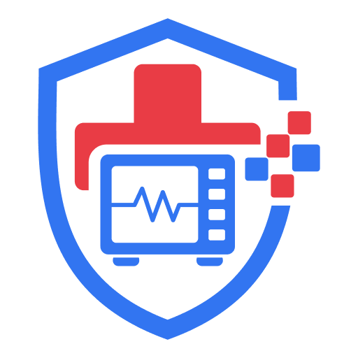
QUẢN LÝ TẬP TRUNG · VẬN HÀNH TẠI CHỖKhông có một bản ghi tập trung.
Trao đổi qua nhiều kênh, khó truy vết.
Bảo dưỡng và kiểm định phụ thuộc nhớ việc.
Không nhìn rõ lô, hạn dùng và tồn tối thiểu.
Thiếu tốc độ dùng và lịch sử giá.
Trong khi máy móc và người bệnh không chờ.
Sửa chữa lớn hơn vì phát hiện muộn; hoá chất hết hạn hoặc tồn vượt nhu cầu.
Thiếu hồ sơ khi thanh tra; bỏ sót kiểm định; gián đoạn hoạt động khám chữa bệnh.
Cùng dữ liệu, khác điểm chạm — từ bàn làm việc đến ngay cạnh thiết bị.
Hồ sơ, phê duyệt, dashboard, báo cáo.
QR, báo hỏng, kiểm kê, ký nhận, offline.
Tìm máy, lỗi, tài liệu và cảnh báo.
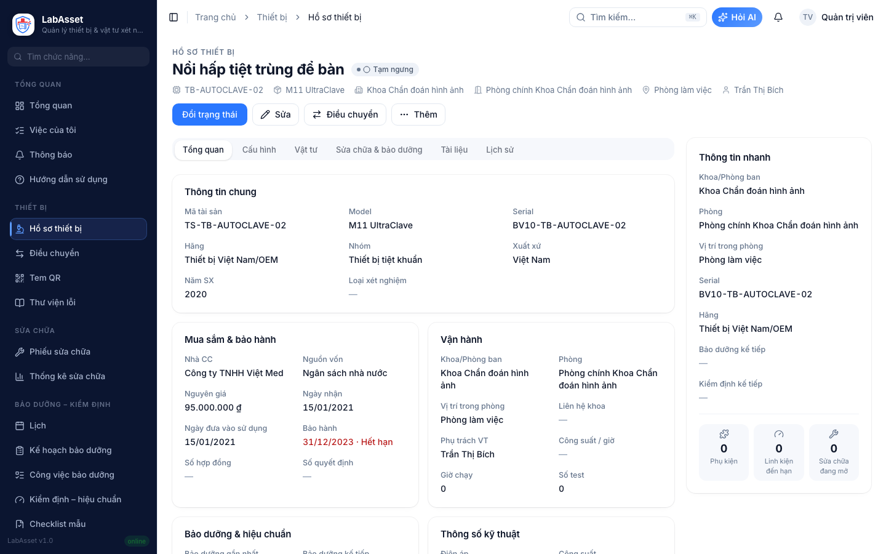
Một mã QR mở đúng hồ sơ, đúng lịch sử, đúng trạng thái.
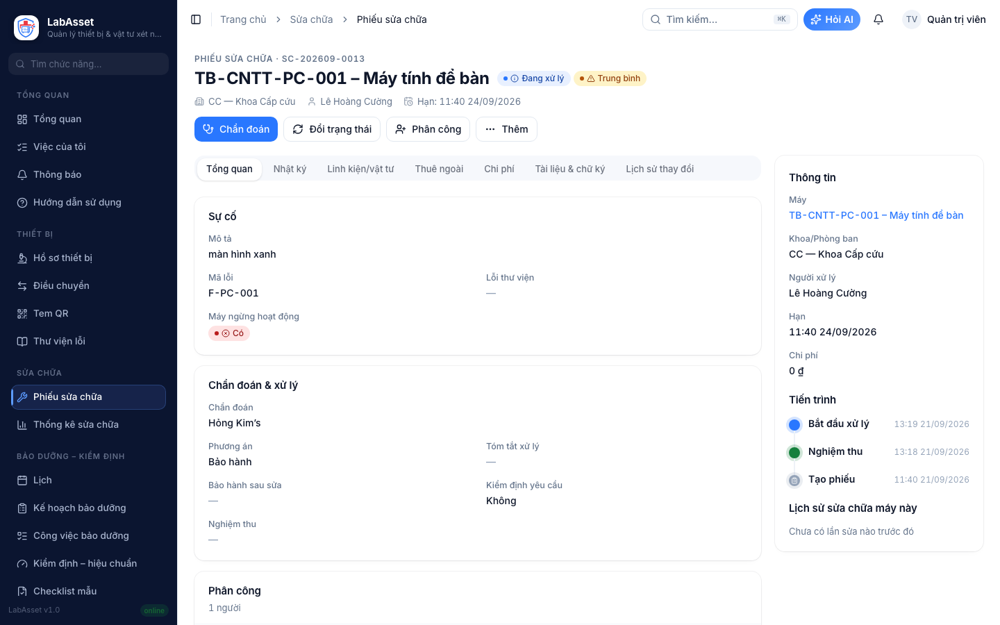
Linh kiện từ kho · chữ ký khoa · biên bản PDF
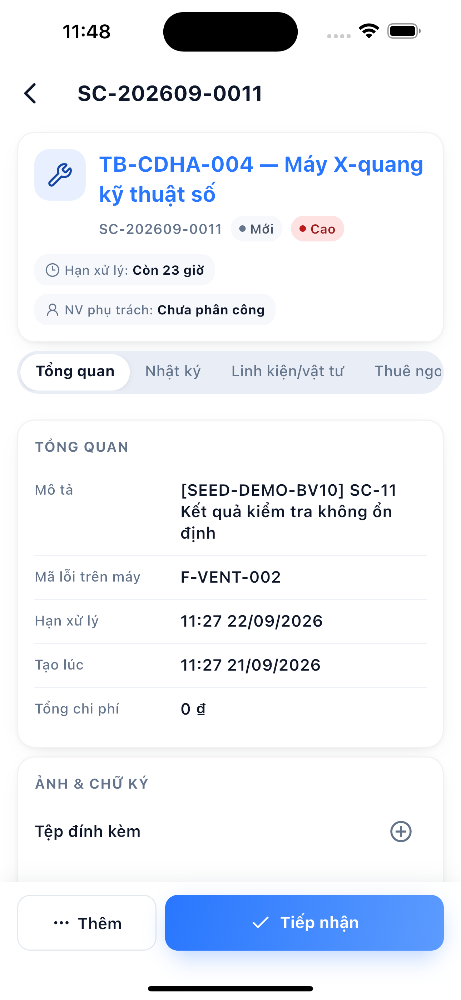
TẠI MÁYKhông bỏ sót hạng mục.
Ngày đến hạn sinh tự động.
Theo khoa, người phụ trách.
Lưu kèm đúng thiết bị.
Trạng thái nhìn thấy trước khi thành rủi ro.
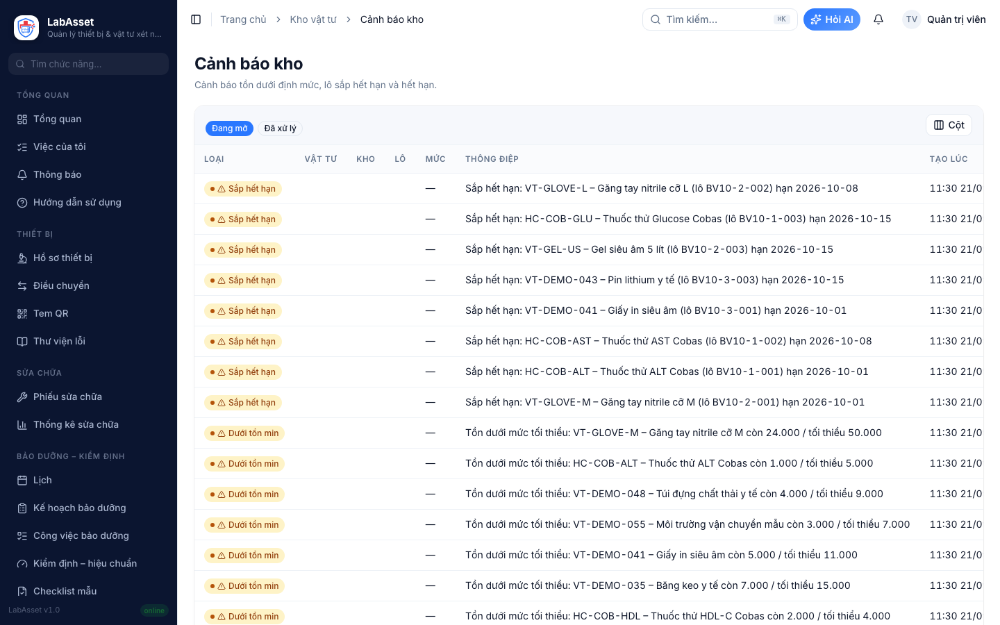
Nhập · xuất · chuyển kho, bám theo lô, hạn dùng và tốc độ sử dụng.
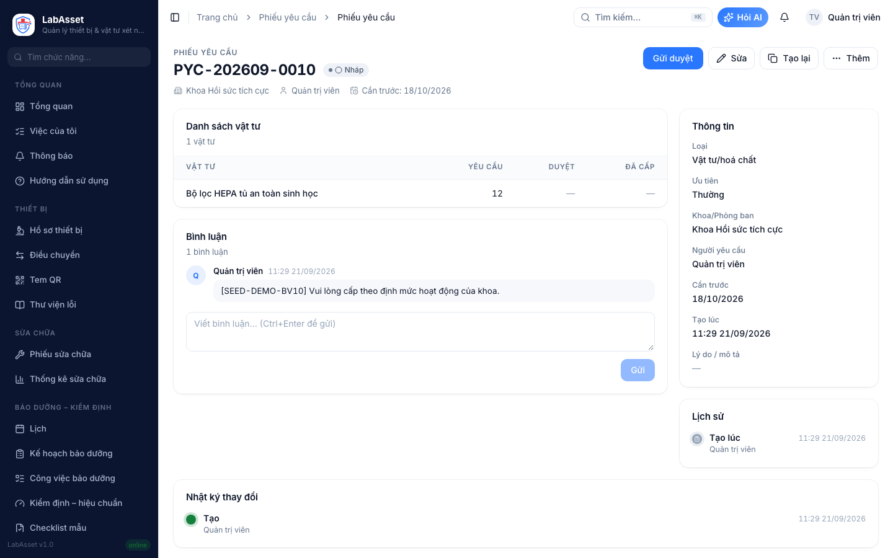
Một phiếu xuyên suốt: nhu cầu → duyệt → xuất kho → ký nhận.
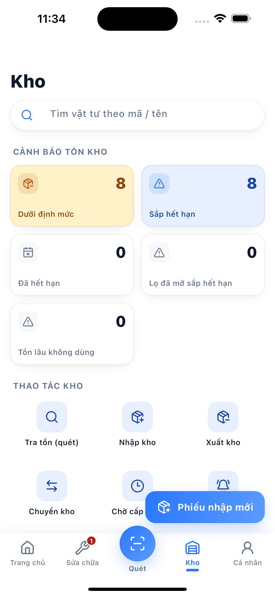
Tải đợt → quét mã → nhập số đếm → đồng bộ.
Dữ liệu tại hiện trường đi thẳng vào bảng chênh lệch và biên bản.
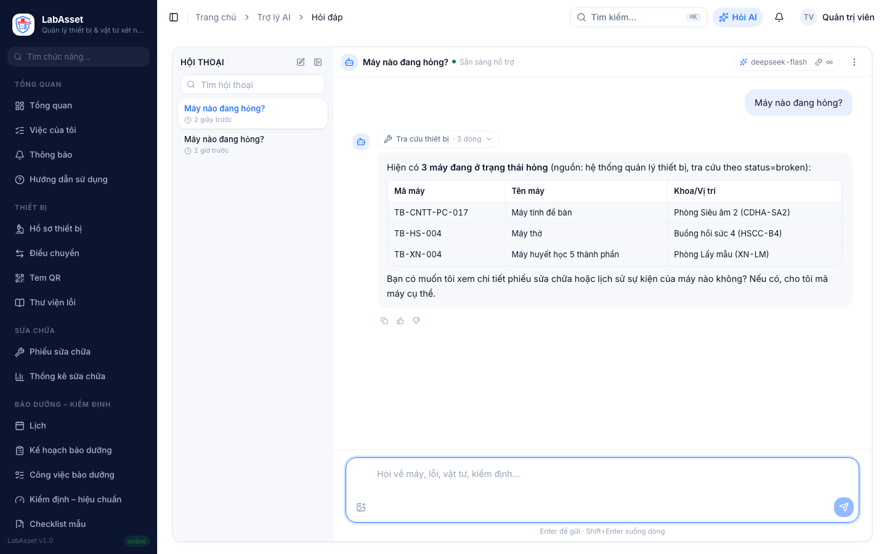
“Máy nào quá hạn kiểm định?” · “Lỗi E-102 xử lý thế nào?”
Đọc hồ sơ, tài liệu máy và bản tin tuần — theo đúng quyền người hỏi.
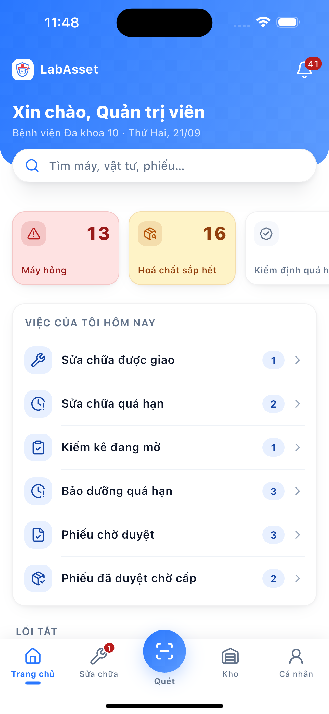
TRANG CHỦ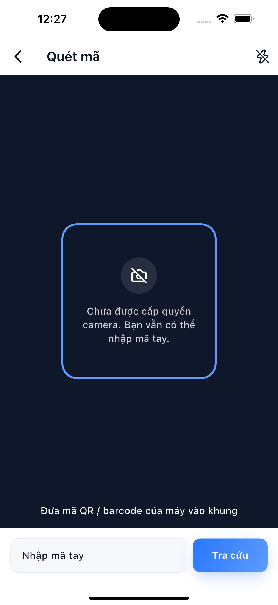
QUÉT QRĐúng máy, có ảnh và mức ưu tiên.
Không phụ thuộc Wi-Fi tại phòng máy.
Nghiệm thu, cấp phát, biên bản.
Ít bước, nút lớn, ưu tiên công việc hiện trường.
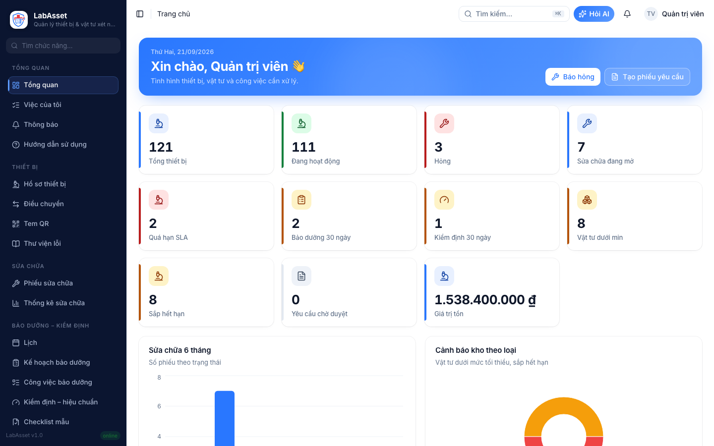
Lãnh đạo xem điểm nóng; nghiệp vụ đi sâu đến từng danh sách và chứng từ.
Thiết bị, vật tư và quy trình cùng một nơi.
Từ QR tại máy đến báo cáo quản trị.
Cảnh báo và AI đưa câu hỏi về đúng hồ sơ.
app-labasset.vattu.site
MỜI DEMO · LIÊN HỆ NHÓM LABASSET